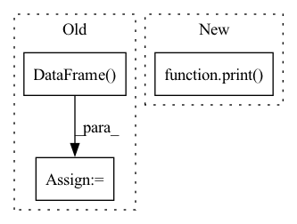

Pattern ID :12883
Before Change
luad_df = pd.DataFrame(luad_list)
luad_df["label"] = 0
luad_df.to_csv("datasets/wsi-tcga-lung/LUAD.csv", index=False)
lusc_df = pd.DataFrame( lusc_list)
lusc_df["label"] = 1
lusc_df.to_csv("datasets/wsi-tcga-lung/LUSC.csv", index=False)
bags_path = luad_df.append(lusc_df, ignore_index=True)
bags_path = shuffle(bags_path)
bags_path.to_csv("datasets/wsi-tcga-lung/TCGA.csv", index=False)
bags_csv = "datasets/wsi-tcga-lung/TCGA.csv"
After Change
print("Best model saved at: " + save_name + " Best thresholds: LUAD %.4f, LUSC %.4f" % (thresholds_optimal[0], thresholds_optimal[1]))
else:
print("Best model saved at: " + save_name)
print( "\n Best thresholds: ".join("class {}: {}".format(*k) for k in enumerate(aucs)))
if __name__ == "__main__":
main()In pattern: SUPERPATTERN
Frequency: 3
Non-data size: 3
Instances Fragment ID: 43535673
Project Name: binli123/dsmil-wsi
Commit Name: 9679d9909a89006555a4d371274255f65ef695ac
Time: 2021-05-20
Author: bli346@wisc.edu
File Name: train_tcga.py
M Class Name: AnonimousClass
N Class Name: AnonimousClass
M Method Name: main(0)
N Method Name: main(0)
M Parent Class:
N Parent Class:
M File Name: train_tcga.py
N File Name: train_tcga.py
M Start Line: 129
M End Line: 165
N Start Line: 111
N End Line: 169
Before Change
node_emb_dict = {i: val for i, val in enumerate(node_emb_arr)}
for i, node in enumerate(col_map.keys()):
emb = pd.DataFrame( df[col_map[node]].map(node_emb_dict).tolist()) .add_prefix(
"n" + str(i) + "_e"
)
df = df.join([emb])After Change
def _apply_embeddings(df, node_embeddings, col_map):
if isinstance(node_embeddings, dict):
print( "Apply heterogeneous embeddings.")
_apply_heterogeneous_embeddings(
df, node_embeddings, col_map)
else:
print("Apply homogeneous embeddings.") Fragment ID: 43535657
Project Name: oap-project/cloudtik
Commit Name: b1cb12787f1e43cfd7987400f6c178507cd30510
Time: 2023-06-25
Author: haifeng.chen@intel.com
File Name: python/cloudtik/runtime/ai/modeling/graph_modeling/graph_sage/modeling/embeddings.py
M Class Name: AnonimousClass
N Class Name: AnonimousClass
M Method Name: _apply_embeddings(3)
N Method Name: _apply_embeddings(3)
M Parent Class:
N Parent Class:
M File Name: python/cloudtik/runtime/ai/modeling/graph_modeling/graph_sage/modeling/embeddings.py
N File Name: python/cloudtik/runtime/ai/modeling/graph_modeling/graph_sage/modeling/embeddings.py
M Start Line: 30
M End Line: 44
N Start Line: 42
N End Line: 51
Before Change
azure_csv = preprocess(azure_csv)
df_merged = pd.DataFrame(data = [original_csv.cleaned_text.values, azure_csv.cleaned_text.values],index=None)
df_merged = df_merged.transpose()
df_merged.columns = ["original", "predicted"]
df_merged["wer"] = df_merged.apply(calculate_wer, axis = 1)After Change
with open(predicted) as file:
azure_csv = file.readlines()
print( len(original_csv)," ", len(azure_csv))
azure_csv = [line.strip() for line in azure_csv]
azure_csv = pd.DataFrame(azure_csv, columns=["text"])
original_csv["ix"] = original_csv["text"].str.split(" \(None-").str[-1].str[0:-1].astype("int") Fragment ID: 43535669
Project Name: open-speech-ekstep/vakyansh-wav2vec2-experimentation
Commit Name: 674a4889d31ba73e15de555d72adc3f16db4400d
Time: 2021-03-11
Author: ps@PSs-MacBook-Pro.local
File Name: utils/wer/wer_wav2vec.py
M Class Name: AnonimousClass
N Class Name: AnonimousClass
M Method Name: run_pipeline(2)
N Method Name: run_pipeline(2)
M Parent Class:
N Parent Class:
M File Name: utils/wer/wer_wav2vec.py
N File Name: utils/wer/wer_wav2vec.py
M Start Line: 86
M End Line: 87
N Start Line: 73
N End Line: 94